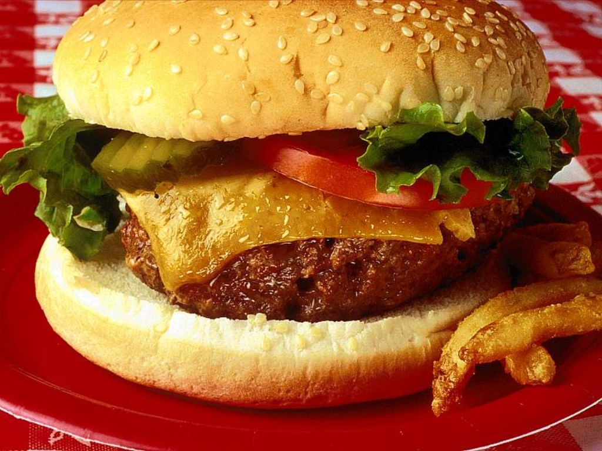

그림의 너비는 350px입니다.
그렇다면 이 div의 너비를 350px에 알맞게
설정해봅시다.
이것이 박스모델이다!

width: 500px;
height: 300px;
border : 15px;
padding: 10px;
margin: 20px;
가로 총 길이 : 500 + (15*2) + (10*2) + (20*2)
세로 총 길이 : 300 + (15*2) + (10*2) + (20*2)
width: 500px;
height: 300px;
border : 15px;
padding: 10px;
margin: 20px;
box-sizing: border-box;
가로 총 길이 : 500px + (margin*2)
세로 총 길이 : 300px + (margin*2)